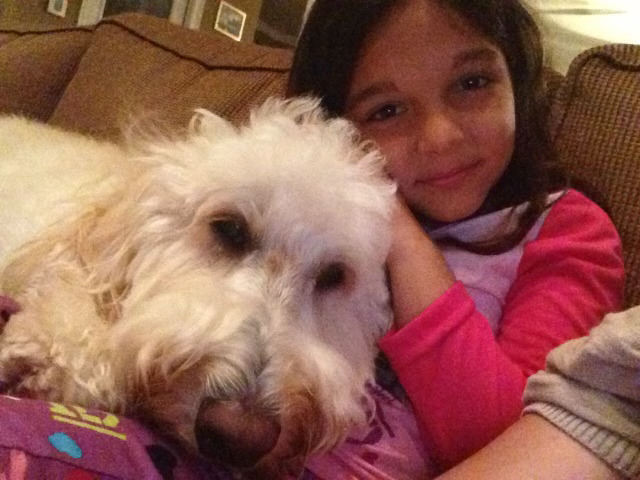

Phase 1 Course Goals
1. Foster the creative habits of mind
In Making 1, I learned how to use code to build a website that represented who I am. Even though I started with a given template, I learned to adjust the HTML and CSS to fit my vision. I figured out how to add my own photos and assign them spots on my page, which made the site more personal. This process showed me that coding is a creative tool, not just a set of strict rules. Each time I tested changes and saw them work, I gained confidence to experiment and trust my ideas.
2. Engage with others in a workshop environment.
Throughout Phase 1, I worked with classmates to troubleshoot problems and share ideas. For example, during Making 2, I created a tennis-themed game with some help from peers who shared tips about JavaScript organization. In return, I explained parts of my HTML setup to others. Talking through these challenges helped me understand coding concepts better. The workshop setting made the learning process feel collaborative instead of stressful.
3. Think deeply about craft.
By Making 3, I realized how small details shape how a website works and feels. In that project, I wrote most of the code myself without relying on AI. I paid attention to things like button placement, image size, and navigation flow. When one image was too large, I used CoPilot to figure out how to adjust it and then applied that knowledge to the rest of my site. This taught me that thoughtful, precise coding makes a big difference in user experience.
Phase 2/3 Course Goals
1. Foster the creative habits of mind
Throughout Phase 2/3, I learned how important experimentation and creative risk-taking are to my process. In Making 4, my first project in Premiere Pro, I had to figure things out through tutorials and trial and error, which pushed me to approach my work with curiosity rather than fear of making mistakes. As I moved into Making 5 and began building a full video essay, I found myself thinking more flexibly about storytelling, how visuals, timing, and sound come together to shape meaning. Even in Making 8, when I struggled with Adobe Character Creator, the creative habit of sitting with confusion and trying different approaches helped me eventually bring my soccer-ball character to life. Phase 2/3 encouraged me to trust my creative instincts, explore unfamiliar tools, and stay open to the unexpected.
2. Engage with others in a workshop environment
Collaboration and peer support played a major role in my progress during Phase 2/3. In Making 6, where I had to create special text effects, I relied on classmates to help me understand the more complex animation steps. Their explanations made the tool feel less intimidating and showed me how valuable it is to ask questions early. Similarly, when I was struggling with Making 8, another peer explained how the face-tracking features actually worked, which completely changed my ability to complete the project. These experiences taught me that the workshop environment is not just a place to receive feedback, but a space to share problems, compare techniques, and grow through community.
3. Think deeply about craft
Each project in Phase 2/3 required me to think more intentionally about the craft behind digital storytelling. In Making 4, I wasn’t just putting text on images, I was learning how pacing, composition, and visual flow can reinforce the emotions I’m trying to convey. Making 5 pushed this even further, because editing video demanded careful attention to rhythm, clarity, and how each shot connected to the next. By the time I reached Making 7 and began working in After Effects, I started thinking about the craft of animation itself: how movement, timing, and precision contribute to an effective design. These projects helped me shift from simply “using the software” to understanding the artistic decisions behind every frame.
4. Engage in sustained research and skills development.
Phase 2/3 required me to continuously build on prior knowledge, and each project became a form of long-term skills development. From Making 4 to Making 5, I saw how returning to Premiere Pro with new expectations pushed me to refine what I had already learned. In Making 6 and Making 7, I expanded into more advanced text animations and motion graphics, which meant researching tutorials, exploring new tools, and applying feedback repeatedly. Making 8 tested my persistence the most, I had to research solutions, revisit instructions, and attempt multiple versions before the final character worked. This phase showed me that new media skills don’t develop instantly; they accumulate through sustained practice, problem-solving, and revisiting techniques over time.
5. Learn to present your work
Throughout Phase 2/3, I learned how to communicate my creative choices more clearly, both visually and through reflection. Making 4 helped me understand how pairing images with text can create a narrative that feels cohesive and intentional. By Making 5, I was presenting a more complex piece, which taught me how important it is to make my editing choices understandable to an audience through visuals alone. Projects like Making 6 and Making 7 required me not only to create polished effects and animations, but also to think about how viewers would interpret them. Even Making 8, with its expressive character, reminded me that presentation is about clarity, personality, and making sure the audience understands the purpose behind my design. Altogether, this phase strengthened my confidence in showcasing my work and articulating what I learned.

generated by Pitt Fuego
“Why make a spark when you can light a fire?